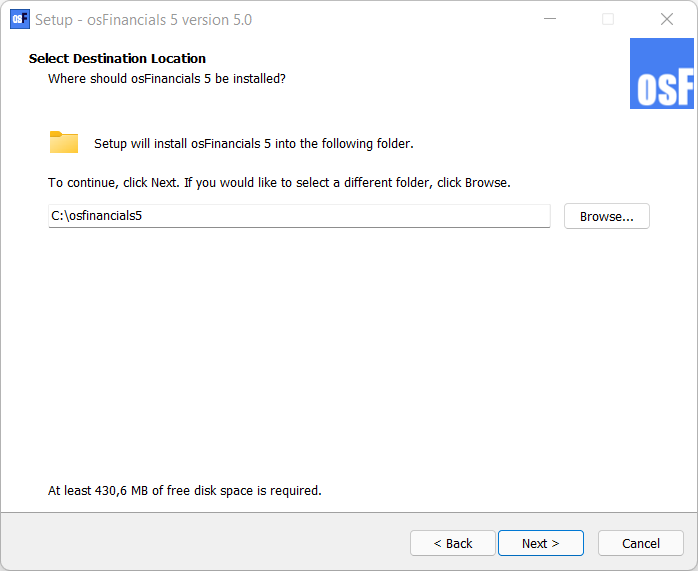
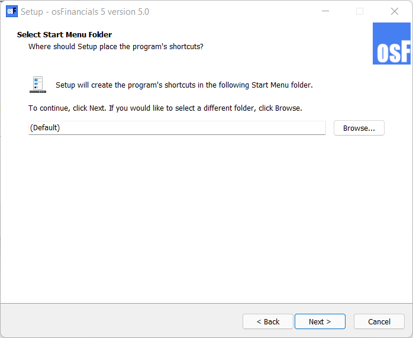
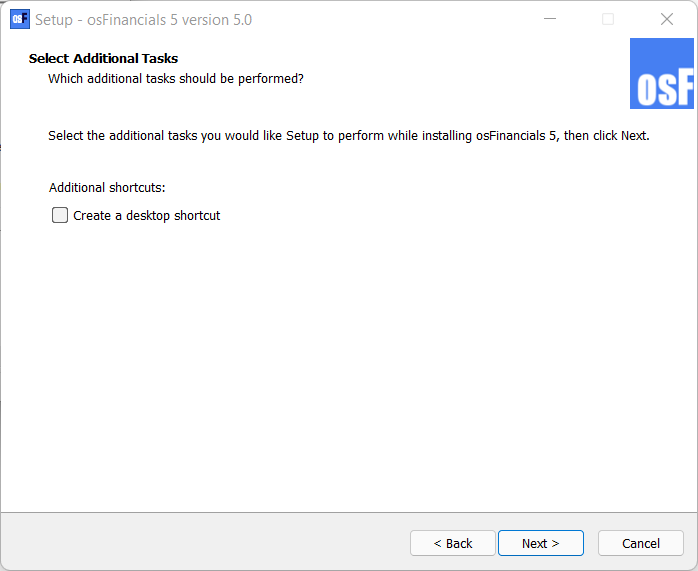
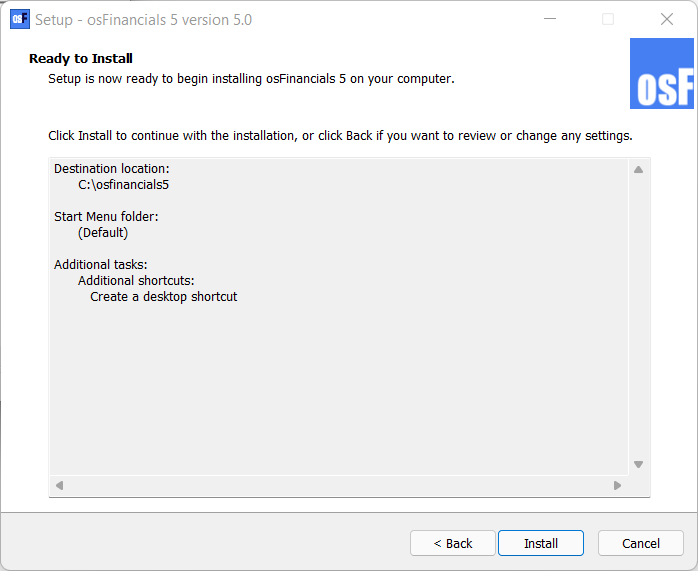
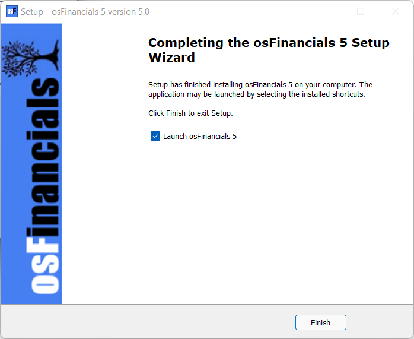

Install osFinancials 5 - Single user
|
|
|

To Install osFinancials5 Single-user:
- Once the osFinancials5 installation file is downloaded, select the file and open it. The "Select Setup Language" screen is displayed:

|
|
The default installation language is set to English. "Nederlands" language is also available to launch the osFinancials5 install options. |
- Select "English" and click OK. The "License Agreement" screen will be displayed.
- Please read the agreement carefully. If you agree with the terms and conditions of the licence agreement, select the “I accept the agreement” option and click Next. The "Select Destination Location" screen is displayed:

|
|
The default path is C:/osFinancials5 on your system's default drive. You may click on the Browse button to select any other folder than the default path where you wish to install osFinancials5 on the "Browse for Folder" screen. If you need to install osFinancials5 on a device with a small default system drive (e.g. 32GB solid state drive), it is recommended to select a larger drive on your system. |

|
|
DO NOT Install in PROGRAM (Program Files, Program Files (x86) or Program Data) folders. If osFinancials5 is installed into the Programs directories (folders) (i.e. Program Files, Program Files (x86) or Program Data folders), it may not run properly. It may cause issues to launch osFinancials5, connection and performance issues with Firebird and FlameRobin, etc. The Program directories is a protected directories of the Windows system. |

- Once finished, click Next. The "Select Start Menu Folder" screen is displayed:
 - The default option is "(Default)". You may select or specify a different folder.
- Once finished, click Next. The "Select Additional Tasks" screen is displayed:

- By default, the "Additional shortcuts", is not selected. Select the "Create a desktop shortcut", if you wish to add the osFinancials5 icon on your desktop, from where you may start or launch the osFinancials5 program.
- Once finished, click Next. The "Ready to Install" screen is displayed:
 - Please check the settings.
|
|
This is your last chance to change anything to be installed. If you are not satisfied with your selection, click on the Back buttons to change the Installation directory, or the Start menu folder or select / deselect the necessary options. |
- Click on the Install button. The osFinancials5 installation process will start.
|
|
Overwrite confirmation message: A confirmation message will be displayed if you have installed osFinancials5 over an existing (previous) osFinancials5 installation. If you have worked (changed or added data) to the Set of Books (with the same Name as installed) and wish to retain the existing Set of Books, click No to retain your existing data. The Set of Books will not be replaced by the installation. If you click on the Yes button, the Set of Books will be replaced with the Set of Books in this installation. |

- Once the osFinancials5 installation process is finished, the "Completing the osFinancials 5 Setup Wizard" screen is displayed:

- Please select or deselect (remove the tick) to Launch osFinancials 5 - If this option is selected (ticked), the osFinancials5 program will automatically be launched, when you click on the Finish button.
- Once finished selecting or deselecting the necessary options, click on the Finish button. The osFinancials5 program will be started if you did not remove (deselect) the tick on the "Launch osFinancials 5" option.
- After launching osFinancials, after installation, the "Set of Books" screen will be displayed.
|
|
Every time an unregistered version of osFinancials5 is started, the following confirmation message will be displayed: This software is limited to 500 transactions or 500 documents. Please register and buy a licence for osFinancials5! Unregistered versions will allow you to process up to 500 transactions and /or documents. Once this limit is reached, osFinancials5 will not allow any processing of transactions, in batches and/or documents. Once you have registered osFinancials5, you will receive an unlocking code and will be able to process further transactions and or documents. |
|
|
After installing osFinancials5, the following optional additional components, is included in the “installs” folder of the osFinancials5 root installation directory:
|